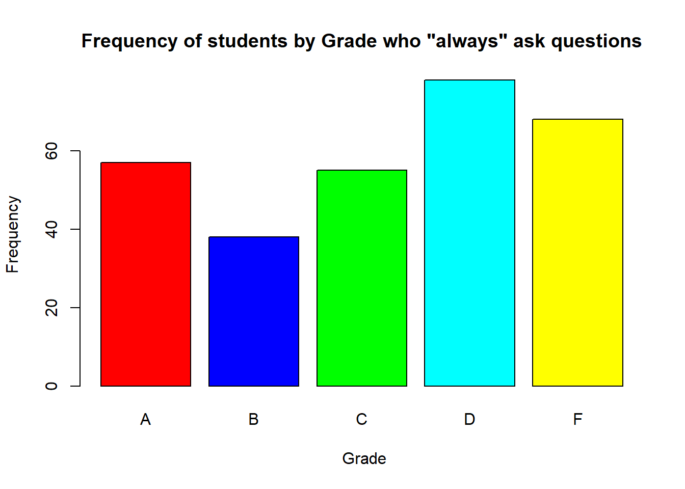
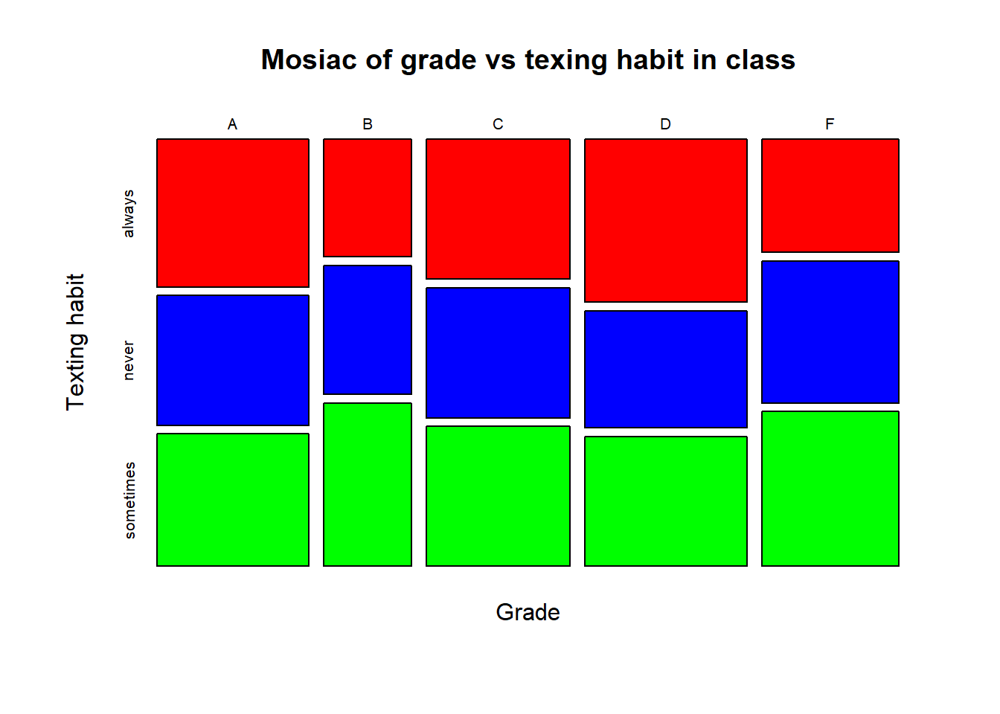
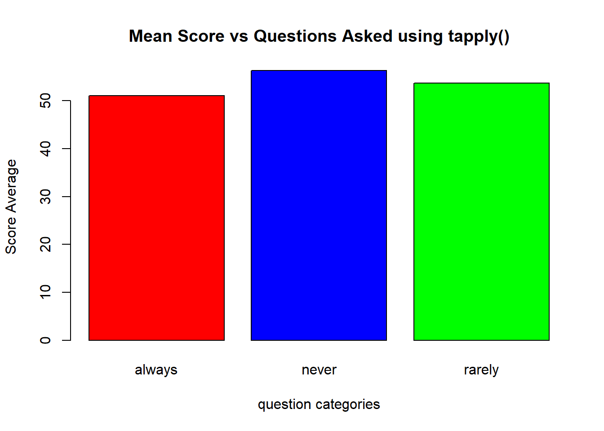
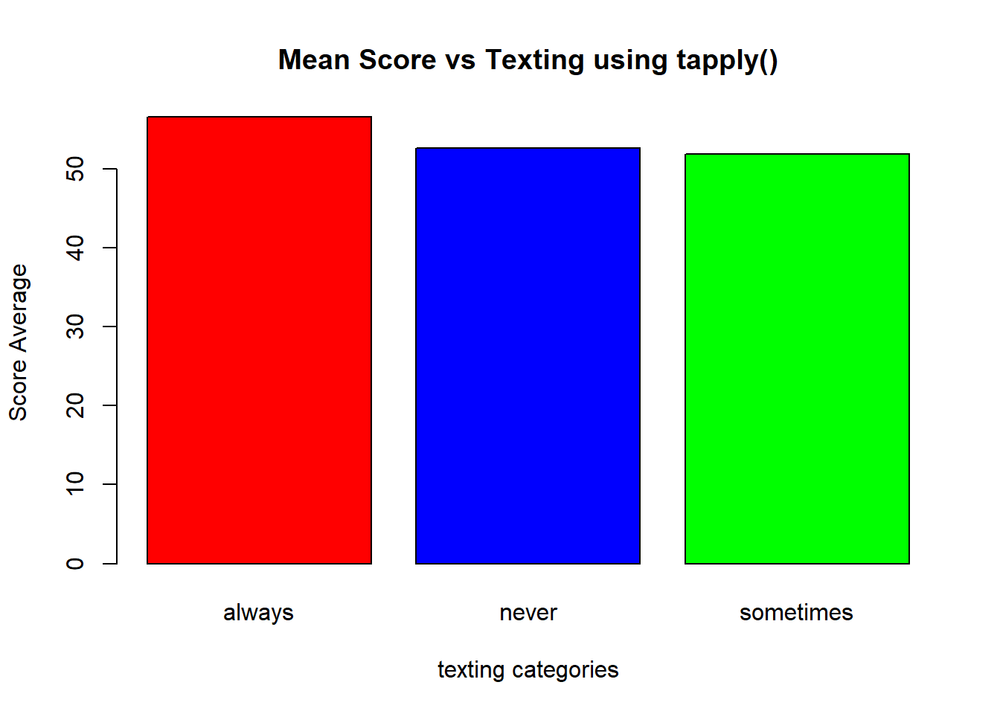
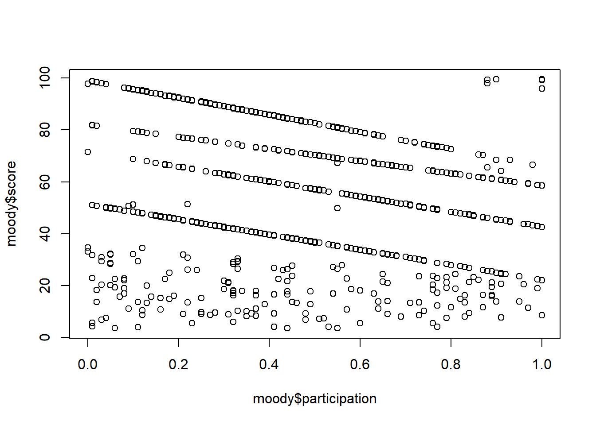

Chapter 2 Data Exploration
2.1 Plots
| score | grade | texting | questions | participation |
|---|---|---|---|---|
| 26.89 | F | never | never | 0.41 |
| 71.57 | B | always | rarely | 0.00 |
| 90.11 | A | always | never | 0.27 |
| 31.52 | D | sometimes | rarely | 0.68 |
| 95.94 | A | always | rarely | 0.09 |
| 45.72 | D | always | rarely | 0.19 |
| 90.82 | A | always | always | 0.25 |
| 75.52 | B | sometimes | never | 0.28 |
| 52.31 | C | never | never | 0.67 |
| 39.57 | D | always | always | 0.40 |
2.1.1 Scatter Plot
- Scatter Plot are used to plot points on the Cartesian plane (X-Y Plane)
- Hence it is used when both the labels are numerical values.
Lets look at example of scatter plot using Moody.
# Let's look at a 2 attribute scatter plot.
plot(moody$participation,moody$score,ylab="score",xlab="participation",main=" Participation vs Score",col="red")
2.1.2 Bar Plot
- A bar plot is used to plot rectangular bars proportional to the values present in a numerical vector.
- This rectangle height is proportional to the value of the variable in the vector.
- Barplots are also used to graphically represent the distribution of a categorical variable, after converting the categorical vector into a table(i.e. frequency distribution table)
- In a bar plot, you can also give different colors to each bar.
colors<- c('red','blue','cyan','yellow','green') # Assigning different colors to bars
#lets make a table for the grades of students and counts of students for each Grade.
t<-table(moody$grade)
#once we have the table lets create a barplot for it.
barplot(t,xlab="Grade",ylab="Number of Students",col=colors,
main="Barplot for student grade distribution",border="black")
2.1.3 Box Plot
- A boxplot shows the distribution of data in a dataset.
- A boxplot shows the following things:
- Minimum
- Maximum
- Median
- First quartile
- Third quartile
- Outliers
- You can create a single boxplot using just a vector or a multiple boxplot using a formula.
- When you write a formula, you should use the Tilde (~) operator. This column name on the left side of this operator goes on the y axis and the column name on the right side of this operator goes on the x axis.
#Suppose you want to find the distribution of students score per Grade. We use box plot for getting that.
boxplot(score~grade,data=moody,xlab="Grade",ylab="Score", main="Boxplot of grade vs score",col=colors,border="black")
# the circles represent outliers.2.1.4 Mosiac Plot
- Mosaic plot is a graphical method for visualizing data from two or more qualitative variables.
- The length of the rectangles in the mosaic plot represents the frequency of that particular value.
- The width and length of the mosaic plot can be used to interpret the frequencies of the elements. -For example, if you want to plot the number of individuals per letter grade using a smartphone, you want to look at mosiac plot.
#suppose you want to find numbers of students with a particular grade based on their texting habits. Use Mosiac-plot.
mosaicplot(moody$grade~moody$texting,xlab = 'Grade',ylab = 'Texting habit', main = "Mosiac of grade vs texing habit in class",col=colors,border="black")
2.2 Free Style data exploration with just seven R commands " R.7 "
Now as you know to make simple but quite colorful basic graphs it is time to have some fun with them. This is the subject of data exploration.
In this section we will go though this process which we call free style data exploration. Free style, since we are not going to use any sophisticated libraries, in fact we will just use 7 commands of R. And with these 7 commands we will be able to do quite a bit, more than you would ever guess in fact.
So, no statistics, no sophisticated R programs. Just feeling the data with four plots and three R instructions:
subset(), table() and tapply()
Instant gratification through data exploration!
It is amazing how much you can do with the data knowing 7 commands. There is no need for months of classes in stats or boot camp in R. You can learn one command a day, or an hour. And be ready to show off your skills and impress with such small arsenal of tools at your disposal.
2.2.0.1 Professor Moody Puzzle
- Here is professor Moody’s puzzle which is the opening data puzzle in my Rutgers data 101 class, every year since 2015. And every year the data is generated according to different pattern.
- Professor Moody has been teaching statistics 101 class for many years. His teaching evaluations went considerably south with the chief complaint: he DOES NOT seem to assign grades fairly. Students compared their scores among themselves and found quite a bit of discrepancies! But their complaints went nowhere since Professor promptly disappeared after posting the final grades and scores.
- A new brave TA, managed to get hold of the carefully maintained grading table (spanning multiple years) of professor Moody by ….messing a bit with Moody's computer….well, let's not explain the details because he would get in trouble. What he found out was a remarkably structured account of how professor Moody assigns his grades.
- Looks like Professor Moody is in fact very alert in class. He is aware of what students do, detecting texting during class and remembering exactly who asked many questions in class. He also keeps the mysterious "participation index" which is a numerical score from 0 to 1. This is probably related to questions asked and answered by students as well as their general attentiveness in class. Remarkable but a little creepy, isn't it?
- What is the best advice the new TA, can give future students how to get a good grade in Professor Moody's class? What factors influence the grade besides the score? Back your recommendation up with plots and evidence from the attached data.The Moody data set is defined here by the following attributes
moody<-read.csv("../files/dataset/moody2020b.csv") #static Load
# moody<-read.csv("") #web load
knitr::kable(
head(moody, 10), caption = 'Snippet of Moody Dataset',
booktabs = TRUE
)| score | grade | texting | questions | participation |
|---|---|---|---|---|
| 26.89 | F | never | never | 0.41 |
| 71.57 | B | always | rarely | 0.00 |
| 90.11 | A | always | never | 0.27 |
| 31.52 | D | sometimes | rarely | 0.68 |
| 95.94 | A | always | rarely | 0.09 |
| 45.72 | D | always | rarely | 0.19 |
| 90.82 | A | always | always | 0.25 |
| 75.52 | B | sometimes | never | 0.28 |
| 52.31 | C | never | never | 0.67 |
| 39.57 | D | always | always | 0.40 |
Moody[StudentID, score, grade, participation, questions, texting, late, early, dozingoff] Score and grade are self explanatory. Participation is supposedly measuring students participation in class.
One can only guess that this may be fraction of classes that student was present during the semester, but who knows it may be a fraction of minutes s/he was paying attention?
Professor Moody is a mysterious and eccentric figure and we do not really know how he calculates participation, nor what kind of electronic surveillance tools he is using in his class. Attribute questions has several values “always”, “frequently”, “sometimes” and “never”. So are the attributes such as texting, late, early, dozing off. In our data set there are students who are always dozing off and are always texting, late in class and leave early and who never ask any questions. Oh, yes, and are almost never around! Guess what grade are they getting? F, you probably guess. Not necessarily.
By the way, our Professor Moody’s scheme differs from year to year we usually use different “behavioral attributes” about students, like “sitting in the first row”, “backrow student” etc.
Grading rules supposedly depend on Professor Moody’s mood in a given semester. Our data set is synthetic and every year we generate it following new patterns embedded different moods of Professor Moody for that specific year. The job of students is to find these patterns.
This is a good illustration of what data exploration is and can achieve. It is just an example, but one can of course easily see that, things we discuss here, applies to any data sets.
Data exploration can be viewed as an indefinite loop:
REPEAT{
Plot,one or many plots.
Transform Data.
} UNTIL GRATIFICATIONIn other words we keep plotting data for different slices of data and depending on the results we slice and plot and slice and plot until we are satisfied.
Put yourself in the position of a student in Moody’s class.
- What does s/he want to know?
- What should I do in order to pass his class.
- Aside from getting the best score possible?
- Ask many questions?
- Do not text?
- Do not doze off?
- May be it is better not to come to class, when one is sleepy. What is the bigger risk?
- How can we find the “leads” – helping us to discover the grading method of Professor Moody?
What is the approach?
First you need “kick the tires”, make some plots, feel the data and perhaps rule out the obvious. In case of Professor Moody data it may mean the following: - Test if straightforward mapping of scores into grades work in Professor Moody’s class. Admittedly it is a long shot. We expect more from professor Moody than just merely following the scoring intervals with A above, say 85, B between 70 and 85 etc. But we need to establish that it is not the case quickly. Since it would be embarrassing to miss the obvious and simplest recommendation. Just score as high as you can. Does not matter what else you do. You may never ask any questions, always come late to class, always text in class or simply…never even show up. All it matters is score!
There is just one plot which can quickly establish whether this simple rule works. And it is boxplot.
As we see in the plot, there are significant overlaps between successive grades. This disproves that there is a function between score and grade. At least it is not always a function. If your score falls in certain areas you may get either one of two grades (A or B, B or C, C or D, D or F).
Here is how we can check which factors may impact the grade. One way of doing this analysis is to make barplots for all possible slices of Moody data frame by a given categorical variable
For example,we want to know if asking questions “matters” for the grade? This can be validated by comparing barplots of grade distribution for different values of attribute questions. The following slices represent subsets of the Moody data frame for each of the values of the attribute “questions”
moody[moody$questions==’always’,]
moody[moody$questions==’frequently’,]
moody[moody$questions==’sometimes’,]
moody[moody$questions==’never’,]The command \(\color{violet}{\text{table}}\) (one of the 7 commands) will provide us grade distribution for each of these slices. For example,
table(moody[moody$questions==’always’,]$grade)
And the barplot, will visualize this table.
Let’s look at the example of the above process for students who always ask question.
barplot(table(moody[moody$questions=='always',]$grade),main = 'Frequency of students by Grade who "always" ask questions', ylab ='Frequency', xlab = ' Grade',col=c('red','blue','green','cyan','yellow'))
We can also run several mosaic plots of GRADE vs one of the behavioral attributes to see if they matter in any way for the grade.
In the following command we can combine attribute grade with anyone of the behavioral attributes
mosaicplot(moody$grade~moody$texting,xlab = 'Grade',ylab = 'Texting habit', main = "Mosiac of grade vs texing habit in class",col=c('red','blue','green','cyan','yellow'),border="black")
This can be concluded by comparing different columns and rows of the mosaic table. If grade distribution is similar for different values of behavioural attributes, this would indicate that these attributes do not matter in the establishing the grade. On the other hand we may “catch professor Moody” and find out that for some value of some attribute, grade distribution is significantly affected. This was the case several years ago when students sitting in the first row, got a grade bump up, even if they get similar scores to students sitting in the back row.
We can see that asking many questions (frequently and always) really maters for the grade, there is more A’s and more B’s for these slices than in general. But this may have nothing to do with Professor Moody rewarding students with the bonus for asking questions. It may be simply the case that such students are more involved and study harder (or are more interested in the topic) and simply get higher scores. We need to dig deeper and see which of the two is the case. Moody’s just gives his personal bonus to students who ask a lot of questions or no such bonus is given – such students simply score higher.
We can accomplish this using again one of the seven R commands – the tapply.
tapply(moody$score, moody$questions, mean)
## always never rarely
## 51.08277 56.32474 53.69217will return average score for each of the values of the attribute moody$questions.
If this values are more or less uniform than it will informally (not statistically yet, for this we have to wait for the next sections) show that questions matter in professor moody grading method and are not just correlated with student’s score. Take a look at
barplot(tapply(moody$score, moody$questions, mean), xlab = 'question categories',ylab = 'Score Average', main = "Mean Score vs Questions Asked using tapply()",col=c('red','blue','green','cyan','yellow'),border="black")
What is the conclusion? Does asking questions often imply higher score? We can repeat this process for all attributes in our data set and all values. Yes, it is tedious! But mechanical. If there were a lot of values it would be a problem for sure, but we only have 4 values per attribute, all in all we have to 4 sets of 4 plots. They lead us to conclusion that the only other attributes which matters is when students “always” doze off, here the distributions of lower grades C, D and F is higher. And again we check if this is simply because scores for such students are lower
barplot(tapply(moody$score, moody$texting, mean), xlab = 'texting categories',ylab = 'Score Average', main = "Mean Score vs Texting using tapply()",col=c('red','blue','green','cyan','yellow'),border="black")
shows that mean scores are the same across different values of the texting attribute. Therefore it seems that the “behavioural” attributes: questions, texting and dozing do not seem to have an impact on the grade.
Lets examine participation attribute.
We define intervals of score as clear, if there is only one grade associated with scores from such interval. The remaining intervals are defined as grey - scores where grade can be either A or B, B or C, C or D and D or F respectively.
We can run a simple R commands to establish the bounds for score intervals for each grade:
LowestA<-min(moody[moody$grade=='A', ]$score)
HighestB<-max(moody[moody$grade=='B', ]$score)
LowestB<-min(moody[moody$grade=='B', ]$score)
HighestC<-max(moody[moody$grade=='C', ]$score)
LowestC<-min(moody[moody$grade=='C', ]$score)
HighestD<-max(moody[moody$grade=='D', ]$score)
LowestD<-min(moody[moody$grade=='D', ]$score)
HighestF<-max(moody[moody$grade=='F', ]$score)Then the grey intervals of score, corresponding to multiple grades are as follows:
<HighestB, LowestA>
<HighestC, LowestB>
<HighestD, LowestC>
<HighestF, LowestD>
Then we can examine how participation influences grades in these grey areas of score. Our hypothesis is that higher participation would probably offer better odds for higher grade. We can run the following command for different values of q.
Lets check how the grade distribution changes for different values of q from the lower values of q to higher values of q. Run the following command for different values of q
LowestA<-min(moody[moody$grade=='A', ]$score)
HighestB<-max(moody[moody$grade=='B', ]$score)
LowestB<-min(moody[moody$grade=='B', ]$score)
HighestC<-max(moody[moody$grade=='C', ]$score)
LowestC<-min(moody[moody$grade=='C', ]$score)
HighestD<-max(moody[moody$grade=='D', ]$score)
LowestD<-min(moody[moody$grade=='D', ]$score)
HighestF<-max(moody[moody$grade=='F', ]$score)
q=0.5
table(moody[moody$score>LowestA & moody$score<HighestB& moody$participation > q,]$grade)##
## A B
## 31 11table(moody[moody$score>LowestB & moody$score<HighestC& moody$participation > q,]$grade)##
## B C
## 45 32table(moody[moody$score>LowestC & moody$score<HighestD& moody$participation > q,]$grade)##
## C D
## 30 13table(moody[moody$score>LowestD & moody$score<HighestF& moody$participation > q,]$grade)##
## D F
## 46 14Please verify that for higher values of 0<q<1, the table operation show higher percentages of better grades.
We come to conclusion that participation matter in grey area of score, in having higher chance for better grade, if participation is higher. Thus, just in case (since no one can predict if they will end up in border line score) it is better to earn high participation index – by (probably) coming to class more often and participating in discussions, and answering professor Moody’s questions.
Now we can reveal how data was generated? What was the real rule embedded in the data.
Now it is time to reveal how we generated our data?
We have indeed defined border areas in score value. In this border areas of score, participation plays a role. Student whose’s score falls into the grey area may get one of two grades, A or B, B or C, C or D and D or F, depending on the score.For example score of 72 may result in A or B. It is more likely to be A if student’s participation is high (higher the better the odds of getting A). If student’s participation is low, it is much more likely to result in lower grade, for the score of 72, it would be B.
Relationship between participation, score and grade
In the process of slicing, dicing and plotting the data we would also discover other interesting relationships still using just 7 commands.
Does higher participation mean higher score, in general? Meaning that such students just know more and perform better in tests and assignments.
We can run scatter plot
plot(moody$participation, moody$score)
Perhaps professor Moody used some threshold of participation to decide between A and B, we can define subset of moody frame
moodyAB<-moody[moody$score>LowestA & moody$score<HighestB,]
M<-Min(moodyAB[moodyAB$grade==A, ]$participation)
N<-Max(moodyAB[moodyAB$grade==B, ]$participation)To see if M is perhaps higher than N? , if it is perhaps a threshold L, between M<L<N was used to decide between the grades of A and B. Another way of checking if higher participation was perhaps associated with A, in the scores falling into AB interval, would be to run boxplot for this subset of the data frame
Boxplot(moodyAB$participation ~ moodyAB$Grade) and see the two boxplots for A and for B. If the one for A had higher median this would be an indication that participation mattered there.
One of the most important questions in data science addresses difference between correlation and causation. What is the relationship of participation and score?
One probably would not expect higher participation translating directly into higher score. But the following scatter plot seems to indicate (rather unexpectedly) that the higher the participation the lower the score!
This seems very unintuitive. This is more of a consequence how we generated our data. For clear intervals, with score clearly mapping into single grade, we make participation low- reflecting the intended grading method which would ignore participation in case student’s score is “clear”.
We can change values of parameters q and s
q<-0.1
s<-70
and examine in more detail the relationships between scores and participation.
mean(moody[moody$participation <q,]$score)
mean(moody[moody$score <s,]$participation)Exploring Behaviors of Students in professor Moody’s class. One may even drop the grade entirely from the picture and simply inquire about behavioral characteristics of Professor Moody’s students. We already know what is the distribution of each type of behavior
Table(moody$questions);
Table(moody$texting)But lets ask for associations between behaviours
Do students who ask a lot of questions also spend little time texting?
Do students who participate more, generally texting less?
Is coming late or leaving early associated with texting in class?
These questions have nothing to do with students performance.
But can all be answered using simple R.7 commands.
It very much depend what is general thrust and motivation of the data analysis. Same data may serve different purposes. We started with predicting what behaviors help getting higher grade in professor Moody’s class. But we can imagine a different study – which is addressing student behavior in professor Moody’s class. Yet another study could address the impact of behavioral attributes on students scores (not grades). All these analysis can be done using or free style exploration and R.7.
What we discover, and lets be very clear about it is not yet guaranteed to be statistically valid.
For this we need statistical evaluation, The p-values, the z-tests etc. Later we will also find statistical functions which can greatly help in data exploration.
Free style exploration role is to generate leads known otherwise as conjectures or hypotheses.
Here is the set of recommendations from former student who cracked that year’s professor Moody’s puzzle (or did she?)
“Judging by plots and means calculated earlier, there are several factors, besides score, that affect students’ grades:
• Sleeping in class increases grade
• Texting in class decreases grades a little
• Being active(participating) in class all the time significantly increases the grade, BUT:
• Being active(participating) in class just occasionally decreases the grade even more, than not participating at all.
• Being active only occasionally significantly decreases the grades.
• Texting does not significantly affect grades .
So for students in order to succeed in professor Moody’s class, my advice will be(besides getting high score):
• VERY IMPORTANT: Participate all the time., or do not participate at all!!!
• Sleep in class(especially if you do not participate anyway)
• While texting might bring down your grade a little bit, the difference is very small”
2.3 Data Frames & New Column.
Now we have to introduce the core data structure of R – the data frame and show we can expand it with extra attributes.
Defining new attributes can very often be critical in data exploration and help to find patterns and relationships which otherwise would not be visible.
For example, may be participation matters but only to Pass/Fail grades? In other words students who Pass (A or B or C) always have participation above a certain threshold? Perhaps students who always text never pass the class? And students who always ask questions never fail? Such rules can only be discovered if we define a new Pass/Fail attribute, additional to grade attribute.
Similarly intervals of participation or score may discover important relationships which would not emerge with just numerical values of such attributes. May be High scores correlate with High participation? To establish it one would have first to define categorical attributes with named intervals of their numerical counterparts.
2.3.1 Create Column
- Lets put a column I have created using age to partition it into 3 category. I’ll tell you how to partition more in upcoming sections.
- For now suppose I am given a new column " colage " with same number of rows as that of the data.frame.
eyJsYW5ndWFnZSI6InIiLCJwcmVfZXhlcmNpc2VfY29kZSI6IiMgbWR5IDwtIHJlYWQuY3N2KFwiaHR0cHM6Ly9yYXcuZ2l0aHVidXNlcmNvbnRlbnQuY29tL2RlZXBsb2toYW5kZS9kYXRhMTAxX3Rlc3QvbWFpbi9NT09EWS0yMDE5LmNzdlwiKVxubW9vZHk8LXJlYWQuY3N2KFwiLi4vZmlsZXMvZGF0YXNldC9tb29keTIwMjBiLmNzdlwiKVxuIyBWaWV3KG1keSkiLCJzYW1wbGUiOiIjY29sYWdlIGNvbHVtbiBoYXMgMyBjYXRlZ29yeSBhbmQgZGl2aWRlcyBvbiB0aGUgYmFzaXMgb2YgYWdlLlxucGYgPC0gY3V0KG1vb2R5JFNDT1JFLGJyZWFrcz1jKDAsNTAsMTAwKSxsYWJlbHM9YyhcIkZcIixcIlBcIikpXG4jIGxlbmd0aChjb2xhZ2UpICNOdW1iZXIgb2Ygcm93cyBpbiBuZXcgY29sdW1uLlxuIyBucm93KG1keSkgI051bWJlciBvZiBSb3dzIGluIGRhdGFmcmFtZVxuXG4jIFRvIGFkZCB0aGlzIG5ldyBjb2x1bW4gY29sYWdlIGluIGRhdGFmcmFtZSBtZHkuXG5uYW1lcyhtb29keSkgIyBJbml0aWFsbHkgZGF0YWZyYW1lIGhhcyA1IGNvbHVtbnNcbm1vb2R5JHBhc3NmYWlsIDwtIHBmICNQdXQgc3ludGF4IGRhdGFGcmFtZU5hbWUkY29sdW1uSGVhZGVyTmFtZSA8LSBuZXdDb2x1bW5cbm5hbWVzKG1vb2R5KSAjIE5vdyBkYXRhZnJhbWUgaGFzIDggY29sdW1ucyJ9